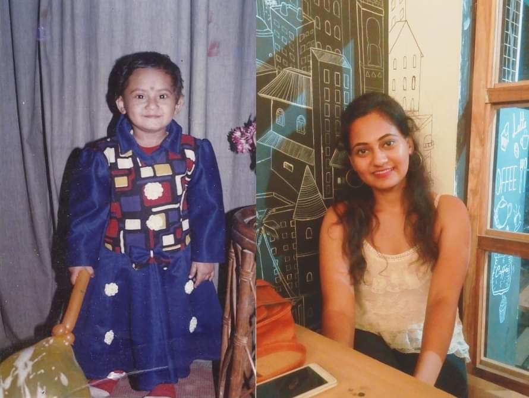
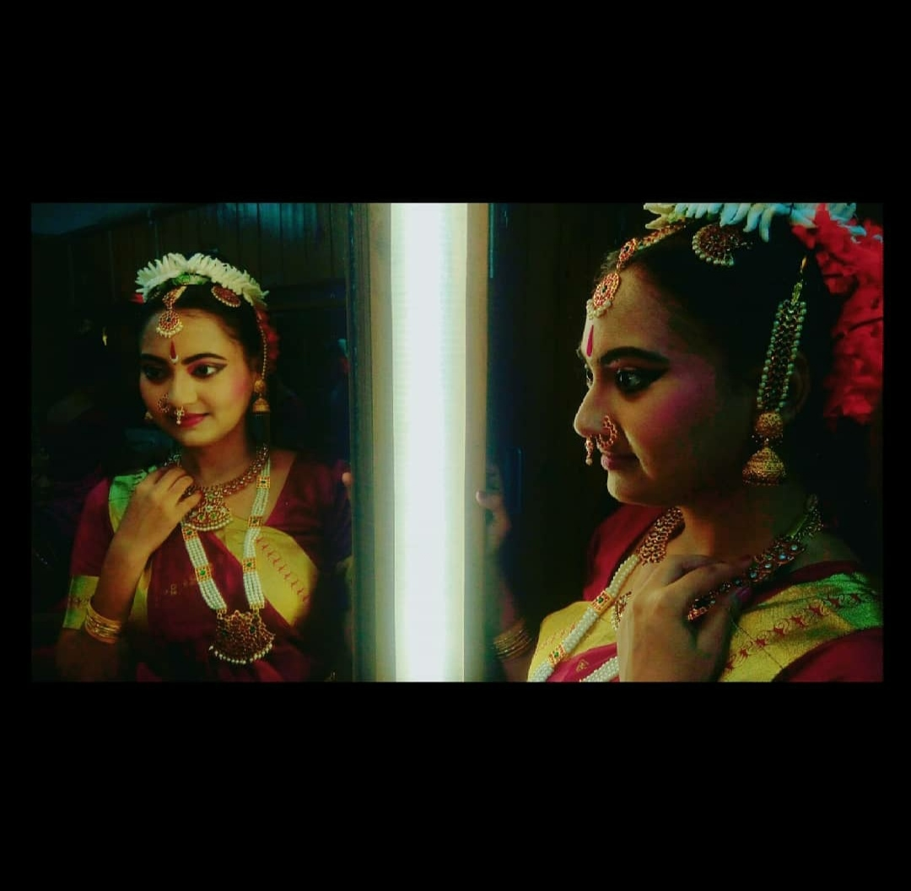
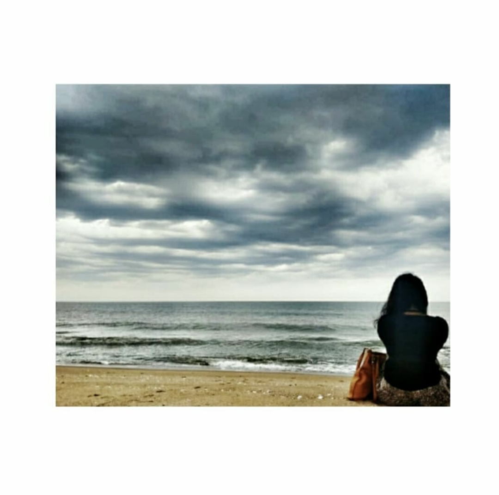

Hi there!! Did someone just become old? Oh yes, its you Tinni xD!!(Please dont get angry :'3). Before everything, I want to wish you a Happy 21'st Birthday, just like we promised each other that no matter what our age be, we will be wishing each other this. Today is a special day for you, although getting old is a bit of a drag actually but let's just ignore everything and think of the good parts.


Anyway be it your Birthday or just a normal day, I cant stop appreciating you, your strengths as well as your flaws(Yes including you spiralling :P) and also can't ignore the fact that how gorgeous you are. You look like a living manifestation of Goddess Durga in this photo!
You are the most talented and artistic girl I have ever come across my entire life and you are also a piece of art crafted by God and your parents. I just cant stop admiring you. And please never think less of yourself, be proud of who you are and what you do. Come to think of it you are such an amazing dancer, although I was only able to watch it once live and I would certainly would like to see more of your dancing.

I am thankful to God that I met you because i learn't a lot of things from you mostly the fact how you stayed strong even after some of the most unfortunate events of your life. Be like this girl, keep your head high and shine throughout the future. If you ever fall down, rise up again from your ashes like a Phoneix and be the badass girl that you are. You deserve every bit of happiness in this world. Hope you got your salary by now, so enjoy and gift yourself some good props, have some good food :D. Below is a small appreciation video I made for you. Hope you'll like iT :') :')!! I know i should have asked permission before taking the photos from your Instagram profile, its your birthday so forgive me maybe please?